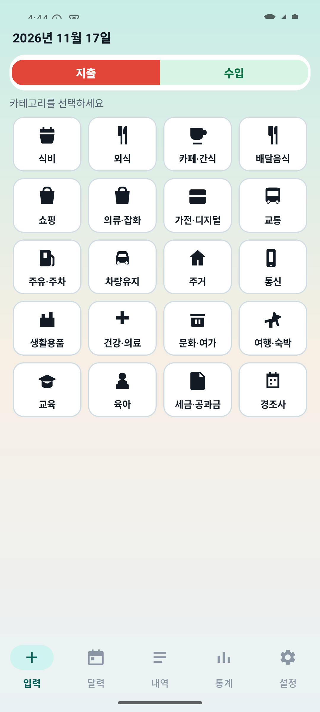
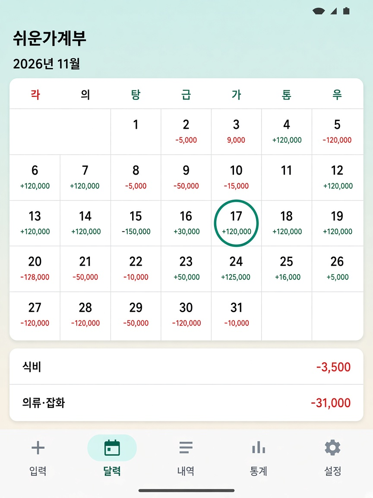

쉬운가계부는
로그인·클라우드 없이 이 기기 안에서만 동작하는 개인용 오프라인 가계부입니다. 카테고리를 고르면 금액 키패드가 바로 열리고, 달력·내역·통계로 한 달의 흐름을 단정하게 확인할 수 있어요.
목표는 단순합니다. 기록은 짧게, 돌아보기는 한눈에, 데이터는 내 폰에만. 가입 절차 없이, 오늘 쓴 돈을 남기는 데만 집중합니다.

이런 분께 잘 맞아요
- 매일 식비·교통비를 빠르게 남기고 싶은 분
- 한 달 결산을 달력·통계로 보고 싶은 분
- 월세·통신비 같은 고정비를 자동으로 챙기고 싶은 분
- 계정 만들기 싫고, 데이터가 폰에만 있었으면 하는 분
- 홈 화면에서 오늘 지출만 잠깐 확인하고 싶은 분
화면으로 보는 쉬운가계부
설치 전에 흐름만 미리 살펴보세요. 입력 → 달력 → 내역 → 통계 → 위젯 순으로 이어집니다.

입력
카테고리만 고르면 금액 입력이 시작됩니다.
달력
날짜별 합계와 그날 내역을 한눈에 봅니다.
내역
월 합계가 위에 고정되고 검색으로 모아 봅니다.
통계
기간별 합계와 카테고리 비중을 확인합니다.
위젯
홈에서 오늘 수입·지출을 바로 확인합니다.핵심 가치
기록은 빠르게
어제·오늘, 자주 쓰는 금액, 00·000 키로 손이 덜 가요. 카테고리를 누르면 키패드가 바로 열립니다.
한 달은 한눈에
달력·내역·통계로 합계와 비중을 바로 확인해요. 차액은 총수입에서 총지출을 뺀 값입니다.
반복은 자동으로
고정 수입·지출 규칙을 등록하면 해당 날짜에 반영돼요. 규칙을 멈춰도 이미 쌓인 기록은 그대로입니다.
이 폰에만 안전하게
서버 동기화 없이, 필요할 때만 파일로 백업해요. 로그인·구독이 없습니다.
만들지 않은 것
쉬운가계부는 의도적으로 단순합니다. 계좌 연동, 클라우드 동기화, 구독 결제, SNS 로그인은 넣지 않았어요. 대신 “오늘 쓴 돈을 남기고 한 달을 돌아보는” 경험에만 집중했습니다.